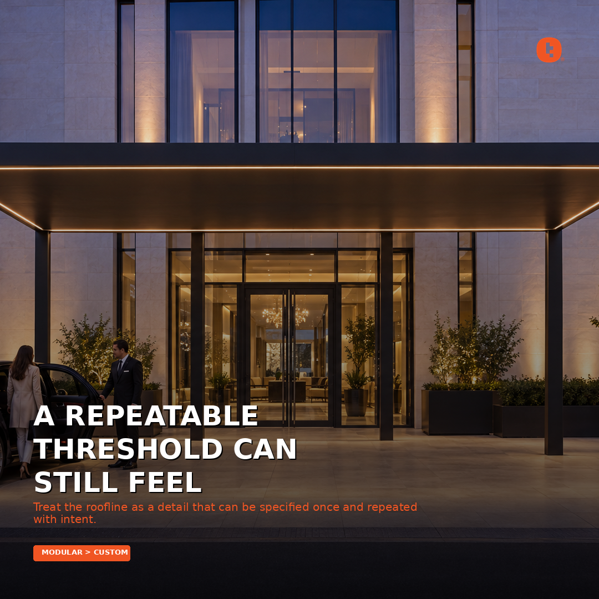

Instagram 1
Insight: A repeatable threshold can still feel specific. Explanation: The hotel arrival feels tailored because the canopy aligns to the building, not because its structure is reinvented. Shift: Treat the roofline as a detail that can be specified once and repeated with intent. Tudelü is a click-together modular aluminum system: no welding, concealed connections, a mitered continuous fascia and integrated LED. Four matte powder-coat colors. $60/sqft.